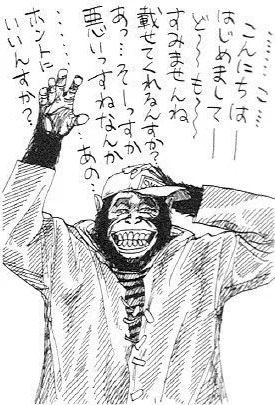
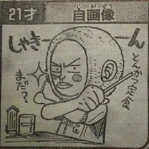
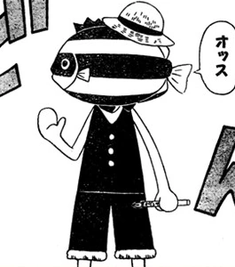
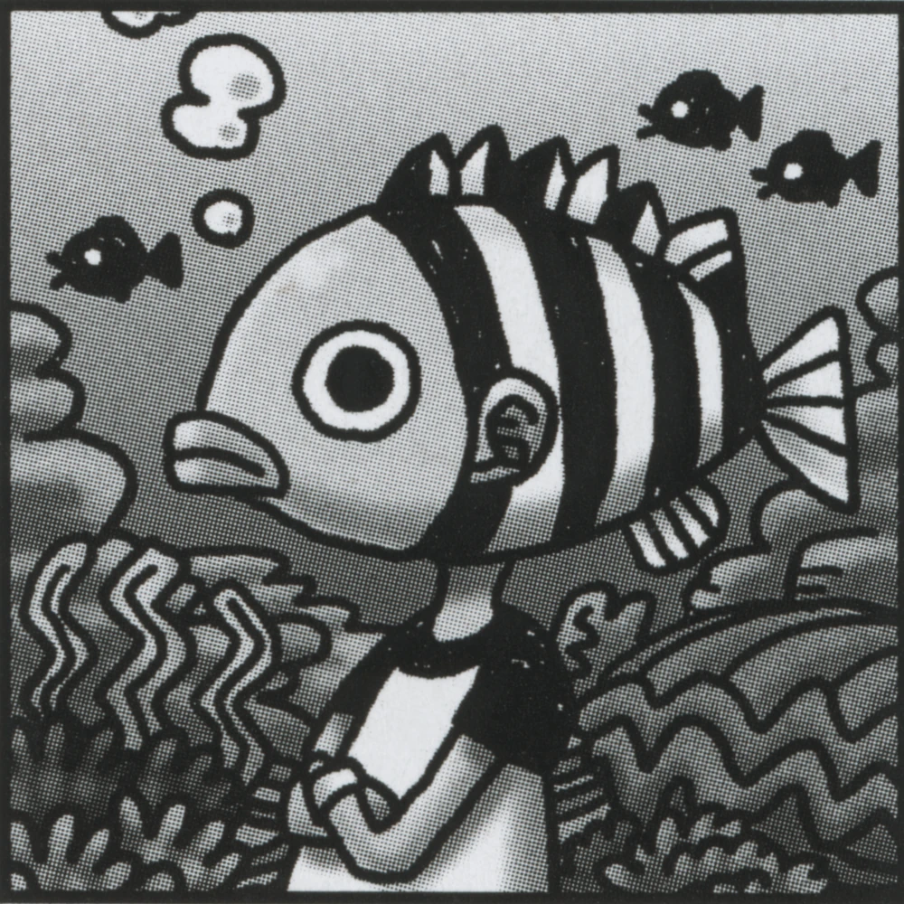

Eiichiro Oda
Eiichiro Oda, born January 1, 1975 in Kumamoto City, Kumamoto Prefecture in Japan, is a professional mangaka, best known as the creator of the manga One Piece.
A dedicated writer and artist since adolescence, Oda began working for Shueisha's Shonen Jump at 17 and currently stands as one of the world's most prominent mangaka, earning an estimated ¥3.1 billion (US$23 million) per year. Despite his rigorous work schedule, he maintains steady correspondence with fans (and the wider public) through both formal interviews and informal channels such as his SBS columns.
Appearance
In real life, Oda is a Japanese man of average height, with few (if any) distinguishing features. When not in formal settings, he favors casual, Western-style clothing.
Like most mangaka, Oda typically uses outlandish caricatures to represent himself in printed works. The most common of these is a striped tropical fish, best known for "giving" all of Oda's weekly comments in Shonen Jump's table of contents; in more detailed depictions (such as the Color Walks' Monochrome Talk headers), this fish is usually given human ears and affixed atop a human body like a mask.

Oda's avatar at age 17.

Oda's avatar at age 21.

Oda as depicted by Reiki Shouda in 2007.

Oda's standard avatar.
Oda's avatar in the Shonen Jump table of contents.
Personality
According to both himself and his editors, Oda is an ardent worker and perfectionist. By his own estimation, he sleeps only three hours per day during a typical work week.
During his first years at Shueisha, Oda was also noted to be unusually impatient and blunt for an aspiring mangaka, willing to argue with senior mangaka and editors on topics as major as story approval and minor as workplace music. This was gradually reduced through a combination of indulgence from the senior mangaka and discipline from the editors.
However, when interacting with fans—particularly in his SBS columns—Oda usually assumes a very laid-back, eccentric personality, eager to make jokes (especially those involving puns and/or toilet humor) and deprecate himself at any opportunity. Despite his age and status, he freely allows fans to address him with his grade-school nickname "Odacchi" (or the even more intimate "Ei-chan").
Per mangaka custom, Oda rarely allows himself to be photographed or filmed. He generally requests that print interviews be illustrated by his personally-drawn caricatures, and only agrees to video recordings if they take care to avert his face (or cover it up in post-production).